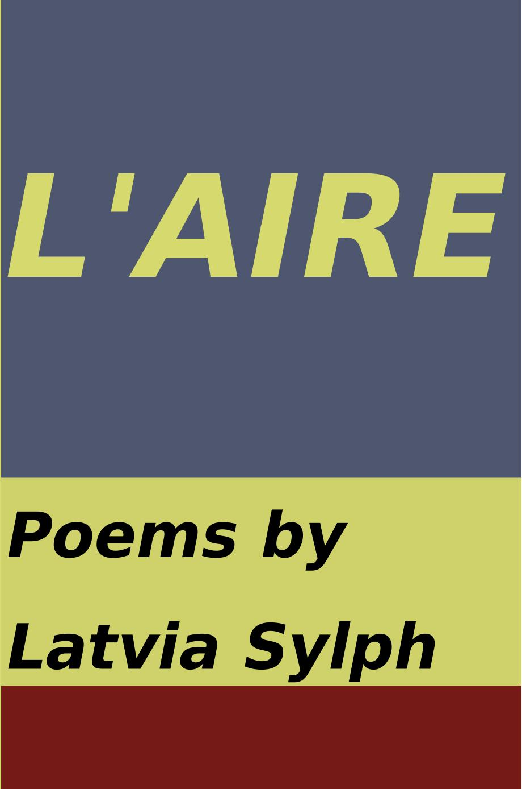

L’Aire
Latvia Sylph
6"x9" paperback, 142 pages
Candle lit, my eyes are slits
Jumpin' now, paper clip
Make a move, sail a ship
Tap it in, tap it in, ruby lips
She's a mixed up, shook up girl
Got me so strung out
I don't know what to do
She's a mixed up, mixed up, shook up girl
- Mink DeVille
Posthumously-published collection of poems by Latvia Sylph, with introductory commentary and analysis by Professor V. Botkin and Denis Pog. Latvia Sylph has often been compared to her more famous contemporary, Sylvia Plath. Rumor has it that her poems were all composed as line-by-line anagrams of Plath’s poems, which is an interesting theory, but raises the question—what kind of an idiot would spend the time and effort performing such a mind-numbing awful task?